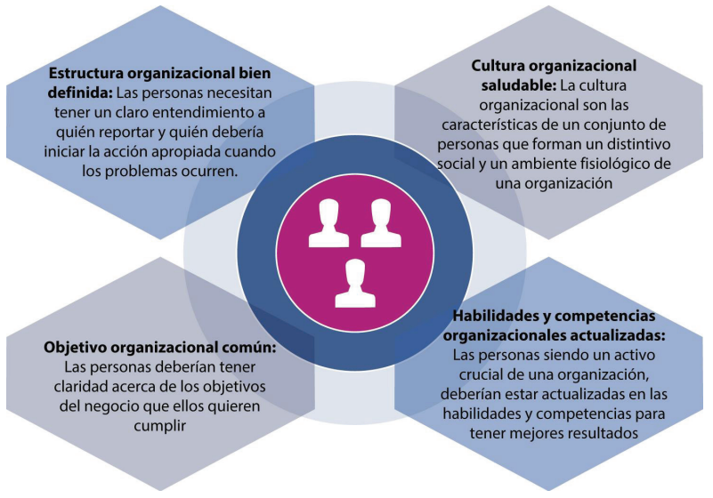
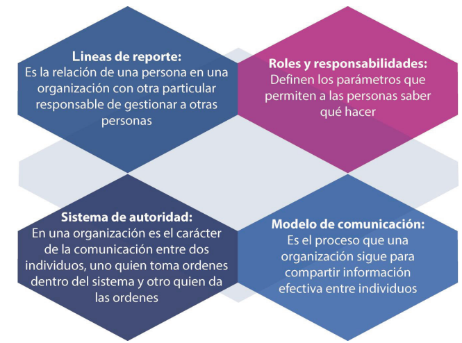
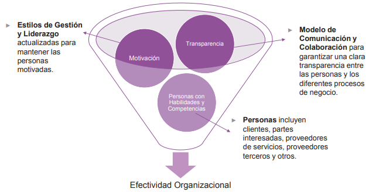

| Organización | |
|---|---|
|  | ¿Qué es?Las organizaciones necesitan una estructura bien definida para alinear a su personal con la estrategia organizacional general y el modelo operativo. Para respaldar la estrategia y el modelo operativo. |
|  | ¿Como se crea?Líneas de reporte: Una organización debe definir claramente las líneas de responsabilidad sólidas y punteadas. Las líneas continuas indican la responsabilidad de las actividades de los empleados, incluida la administración de la disciplina. Las líneas de puntos indican un nivel más limitado de responsabilidad y autoridad sobre los demás. Roles y responsabilidades: Cuando una organización define roles y responsabilidades claros, permite a las personas conocer las expectativas, tales como cómo comportarse, qué cumplir y cómo alcanzar la meta. Una comprensión clara también les permite trabajar juntos con menos argumentos y más creatividad. Sistemas de Autoridad: Dependiendo de los diferentes tipos de responsabilidades, las personas en una organización pueden tener tres tipos de autoridad: Autoridad de línea: es la autoridad más básica en una organización que permite a los gerentes dirigir el trabajo de los empleados. Los gerentes pueden tomar algunas decisiones incluso sin consultar a nadie. La autoridad de línea incluye principalmente gerentes que son responsables de alcanzar los objetivos organizacionales. Autoridad del personal: los gerentes de personal apoyan a los gerentes de línea y otro personal al ayudarlos y aconsejarlos sobre cómo mejorar su eficacia para realizar las tareas requeridas. Autoridad funcional: una organización proporciona autoridad funcional a un empleado o departamento para realizaruntrabajoenparticularduranteunperíododetiempo. Este tipo de derechos se refiere a procesos, prácticas, políticas o asuntos relacionados con las actividades de otros departamentos. Modelo de comunicación: la comunicación es el catalizador para una comprensión clara de cualquier cosa, ya que se trata de compartir información de una persona a otra. El proceso que siguen las organizaciones para una comunicación efectiva se conoce como el modelo de comunicación. Por lo tanto, la comunicación efectiva es esencial para tener un entendimiento claro de las líneas de reporte, roles y responsabilidades, sistemas de autoridad y para otros asuntos. |
|  | ¿Quienes se ven involucrados?Las personas son un recurso clave en la dimensión Organizaciones y Personas. Es importante prestar atención no sólo a las habilidades y competencias de los equipos o elementos individuales, sino también a los estilos de gestión y liderazgo, así como las habilidades de comunicación y colaboración. |